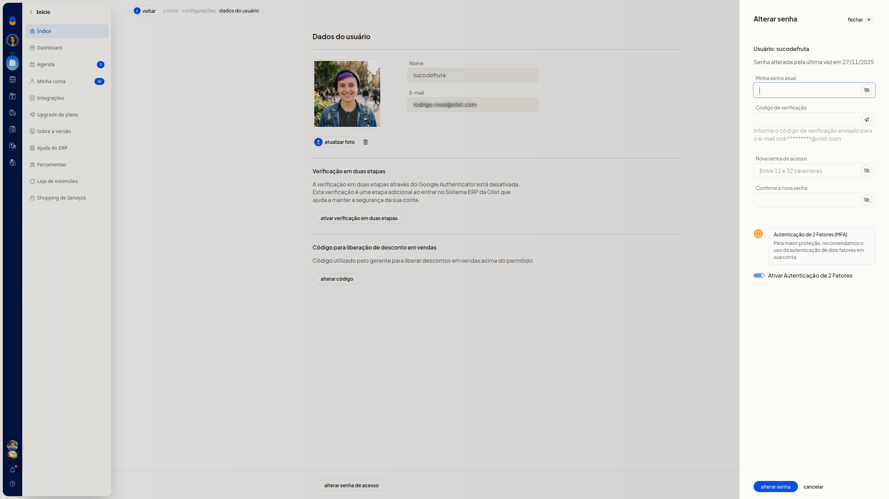
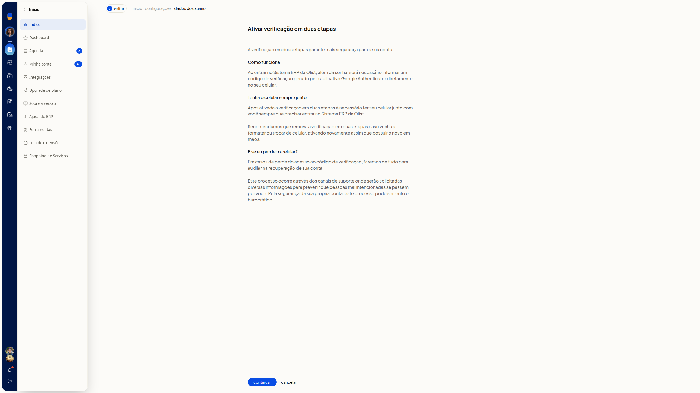
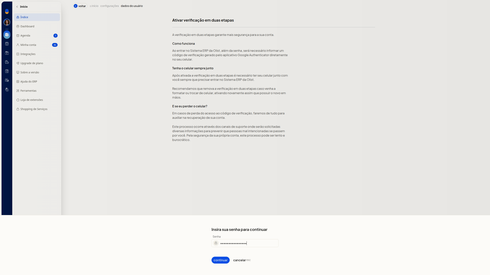

A validação por token autoriza a troca da senha de acesso com um código de verificação enviado ao email da conta. A autenticação multifator (MFA) é a verificação em duas etapas do ERP da Olist: uma etapa a mais ao entrar, com um código do Google Authenticator.
Em Dados do usuário, você informa esse código, pode reenviá-lo e inicia a verificação em duas etapas. No formulário da troca de senha, também pode marcar Ativar Autenticação de 2 Fatores.
Importante
- Tenha a senha atual da conta e acesso ao email da conta. A troca de senha pede a senha atual e o código de verificação enviado a esse email.
- Na troca de senha, a nova senha precisa ter entre 12 e 32 caracteres, com letra maiúscula, minúscula, número e caractere especial. Não use =, aspas, apóstrofo nem dois-pontos, e não use a senha de login da empresa.
- A ativação da verificação em duas etapas pede a senha atual antes de continuar.
- A verificação em duas etapas usa o código do Google Authenticator ao entrar no ERP. Mantenha o celular usado na ativação.
- Remova a verificação em duas etapas antes de trocar de celular. Se o celular for perdido, recupere a conta pelo suporte.
Instruções
Informar o código de verificação
-
Acesse Configurações > Configurações ERP > Geral > Alterar dados do usuário. Pelo avatar no topo, acesse Minha conta > Dados do usuário.


-
Clique em Alterar senha de acesso.

-
Informe a senha atual em Minha senha atual.
-
Informe em Código de verificação o código enviado ao email da conta. O email aparece mascarado no formulário. Para receber outro código, clique em Re-enviar código.
-
Informe Nova senha de acesso e repita em Confirme a nova senha.

-
Clique em Alterar senha para concluir a troca com o código de verificação.
Ativar a verificação em duas etapas
-
Acesse Dados do usuário em Configurações > Configurações ERP > Geral > Alterar dados do usuário.
-
Na seção Verificação em duas etapas, clique em Ativar verificação em duas etapas. A seção informa que a verificação pelo Google Authenticator está desativada e que ela é uma etapa adicional ao entrar no ERP.

-
Clique em Continuar.
-
Na etapa Insira sua senha para continuar, informe a senha atual em Senha.

-
Clique em Continuar para seguir na ativação.
Marcar a autenticação de 2 fatores na troca de senha
- Acesse Dados do usuário em Configurações > Configurações ERP > Geral > Alterar dados do usuário.
- Clique em Alterar senha de acesso.
- Marque Ativar Autenticação de 2 Fatores.
- Preencha Minha senha atual, Código de verificação, Nova senha de acesso e Confirme a nova senha.
- Clique em Alterar senha para enviar a opção junto com a troca de senha.
Informações adicionais
Cancelar volta sem concluir a ação
- Cancelar no formulário de troca de senha fecha o formulário e volta a Dados do usuário.
- Na etapa Insira sua senha para continuar, Cancelar volta ao aviso. A tela indica ESC para esse Cancelar.
- Cancelar no aviso de ativação volta a Dados do usuário, com a verificação pelo Google Authenticator ainda informada como desativada.
O formulário mostra a data da última alteração
O formulário de troca de senha exibe a data da última alteração de senha.